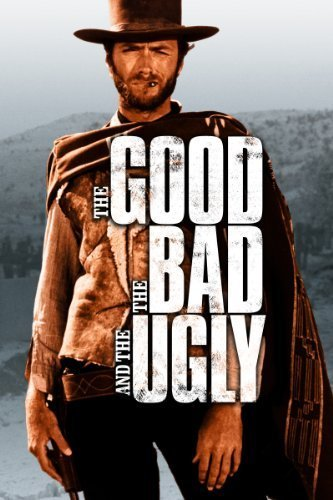
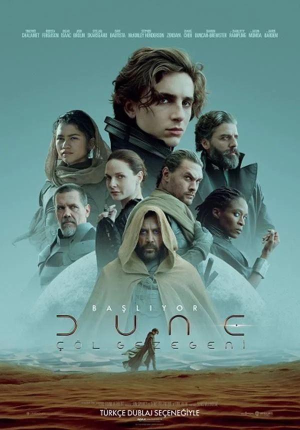
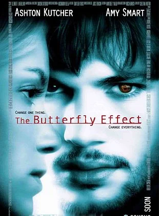

Film Önerileri

1. The Good, the Bad and the Ugly: Amerikan İç Savaşı'nın kaotik ortamında geçen bu film, Western türünün gelmiş geçmiş en büyük şahseridir. Üç farklı karaktere sahip silahşörün, gizli bir altın gömüsünü bulmak için girdiği amansız yarışı anlatır. Blondie, Angel Eyes ve Tuco; her biri kendi çıkarı için diğerini satmaya hazır, zeka dolu hamleler yapar. Ennio Morricone’nin efsanevi müzikleriyle birleşen sahneler, izleyiciyi adeta tozlu bir çöle hapseder. Filmin finalindeki üçlü düello sahnesi, sinema tarihinin en ikonik ve gerilim dolu anlarından biri sayılır. Dostluk, ihanet ve açgözlülük temaları, uçsuz bucaksız vadilerde sert bir dille işlenmeye devam eder. Sadece bir kovboy filmi değil, aynı zamanda savaşın anlamsızlığını ve insan doğasını sorgulayan bir yapıttır. Sergio Leone’nin yönetmenlik dehası, her karede izleyiciye sinemanın gerçek gücünü iliklerine kadar hissettirir.
 2. The Prestige:
2. The Prestige: 19. yüzyıl Londra’sında iki illüzyonistin birbirini yok etme hırsı üzerine kurulu, dahi bir kurgu hikayesidir. Robert Angier ve Alfred Borden, bir sahne kazasından sonra birbirlerine ezeli düşman kesilen iki yetenektir. Birbirlerinin sırlarını çalmak ve en büyük gösteriyi yapmak uğruna her türlü ahlaki sınırı zorlarlar. Film, "Vaat", "Dönüşüm" ve "Prestij" bölümleriyle bir sihirbazlık numarası gibi katman katman ilerler. Christopher Nolan, izleyiciyi sürekli ters köşe yaparak kimin haklı kimin haksız olduğunu sorgulatır. Fedakarlık ve takıntı arasındaki ince çizgi, karakterlerin hayatlarını geri dönülmez bir yıkıma doğru sürükler. Nikola Tesla gibi tarihi figürlerin de dahil olduğu bu karanlık atmosfer, bilim ve sihri iç içe geçirir. Final sahnesiyle beyin yakan film, bittiğinde her şeyi en baştan tekrar izleme isteği uyandıran bir eserdir.
 3. Everything Everywhere All at Once:
3. Everything Everywhere All at Once: Sıradan bir hayat yaşayan Evelyn’in, bir anda kendini çoklu evrenlerin merkezinde bulduğu çılgın bir maceradır. Vergi dairesindeki sıkıcı bir gün, paralel evrenlerdeki versiyonlarının yeteneklerine erişmesiyle son bulur. Kaosun hakim olduğu bu dünyada, evrenin sonunu getirmeye çalışan gizemli bir düşmanla savaşmak zorundadır. Görsel efektleri ve hızlı kurgusuyla izleyiciyi yoran ama bir o kadar da büyüleyen modern bir baş yapıttır. Aile bağları, pişmanlıklar ve hayatın anlamsızlığı gibi derin konuları mizahla harmanlayarak anlatmayı başarır. Her sahnede "bu kadar da olmaz" dedirten absürt olaylar, aslında karakterin içsel yolculuğuna hizmet eder. Geleneksel sinema kalıplarını yıkan film, son yılların en yaratıcı ve en çok ödül alan işlerinden biridir. Evelyn'in kendi varoluşunu kabul etme süreci, izleyiciye duygusal ve aksiyon dolu unutulmaz bir deneyim sunar.

4. Dune: Uzak bir gelecekte, evrenin en değerli kaynağı olan "baharatın" merkezi Arrakis gezegeninde geçen bir destandır. Genç Paul Atreides, ailesinin bu tehlikeli gezegeni yönetmekle görevlendirilmesiyle büyük bir komplonun içine düşer. Dev solucanların, kum fırtınalarının ve acımasız düşmanların arasında hayatta kalmak için seçilmiş kişi olmalıdır. Görsel ihtişamı ve devasa prodüksiyonuyla bilim kurgu türünü yeniden tanımlayan epik bir sinema deneyimidir. İmparatorluklar arası siyaset, din ve ekoloji gibi ağır konuları ustalıkla işleyen derin bir hikaye yapısı vardır. Paul’un kabusları ve gördüğü vizyonlar, gelecekteki büyük savaşın ve kendi kaderinin habercisi niteliğindedir. Hans Zimmer’in büyüleyici müzikleri, çölün ıssızlığını ve tehlikesini her an ensenizde hissetmenizi sağlar. Birinci sınıf oyunculuklarla desteklenen bu film, Frank Herbert’in ölümsüz eserini layığıyla ekrana taşımıştır.

5. The Butterfly Effect: Geçmişteki travmalarını değiştirmek için zamanla oynayan bir gencin, hayatının nasıl kabusa döndüğünü anlatır. Evan Treborn, çocukluğundaki boşlukları doldurmak için eski günlüklerini okuyarak geçmişe gidebildiğini fark eder. Yaptığı en küçük bir iyilik veya değişiklik, gelecekte zincirleme olarak felaketlere yol açan sonuçlar doğurur. "Bir kelebeğin kanat çırpışı, dünyanın öbür ucunda fırtınaya neden olabilir" teorisini merkeze alan bir yapımdır. Her seferinde daha iyi bir hayat kurmaya çalışırken, sevdiklerinin yaşamını daha beter hale getirmesi yıkıcıdır. Gerilim ve dram türlerini başarıyla birleştiren film, izleyiciye kader ve özgür iradeyi sertçe sorgulatır. Hangi seçimin doğru olduğunu bilmenin imkansızlığı, ana karakteri yavaş yavaş deliliğin eşiğine sürükler. Finaliyle iz bırakkan eser, geçmişi değiştirmenin bedelinin ne kadar ağır olabileceğini tokat gibi yüze çarpar.
Ana Sayfaya Dön